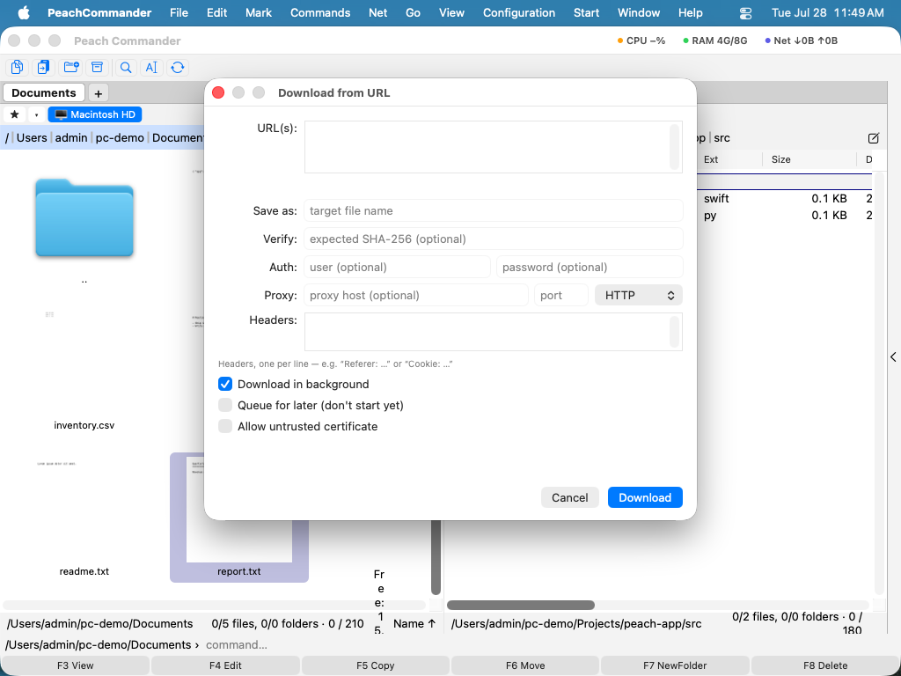

Prenašanje z naslova URL
Peach Commander lahko pridobi datoteko naravnost s spletnega naslova HTTP ali HTTPS v dejavno podokno, brez odpiranja brskalnika. Prilepite povezavo, potrdite ime, pod katerim bo shranjena, in prenos teče sam — z nadaljevanjem, če povezava pade, paketnimi prenosi več povezav naenkrat in izbirnim preverjanjem nadzorne vsote, tako da veste, da je datoteka prispela nedotaknjena.
Prenesite datoteko
- Odprite mapo podokna, kamor želite, da datoteka pristane.
- Izberite Omrežje > Prenesi z URL ali pritisnite Cmd+Shift+U.
- Prilepite spletni naslov v polje URL-ji. Če ste prej kopirali povezavo, se izpolni za vas.
- Preverite ime Shrani kot — predlagano je iz povezave in ga lahko prosto uredite.
- Kliknite Prenesi.

(Slika: pogovorno okno prenosa — prilepite povezavo, uredite ime in nastavite izbirno preverjanje, poverilnice, glave ali posrednika.)Privzeto prenos teče v ozadju, tako da lahko med prenosom nadaljujete delo v podoknih. Izklopite Prenesi v ozadju, da počakate nanj, ali vklopite V vrsto za kasneje, da ga nastavite, ne da bi ga še začeli.
Prenesite več datotek naenkrat
Prilepite en spletni naslov na vrstico v polje URL-ji. Ko je prisotnih več povezav, se ime vsake datoteke samodejno izpelje iz njene povezave, polji Shrani kot in Preveri za posamezne datoteke pa sta izklopljeni.
Nadaljevanje prekinjenega prenosa
Če je prenos prekinjen, Peach Commander ohrani, kar je že prejel, v začasni datoteki .part. Ponovni zagon istega prenosa nadaljuje od mesta, kjer se je ustavil, kadar koli strežnik to podpira, namesto da bi začel znova. Datoteka .part dobi končno ime šele, ko se prenos uspešno konča.
Bližnjice
| Dejanje | Bližnjica |
|---|---|
| Prenesi z URL | Cmd+Shift+U |
Nasveti
- Preverite datoteko. Za en prenos prilepite pričakovano nadzorno vsoto SHA-256 v polje Preveri. Po prenosu se nadzorna vsota datoteke primerja z njo, tako da lahko zaupate, da se datoteka ujema s tem, kar je navedel izdajatelj.
- Zahtevana prijava? Vnesite uporabniško ime in geslo v polji Pristnost za spletna mesta, ki uporabljajo osnovno preverjanje pristnosti. Za dostop na osnovi žetona dodajte vrstico
Authorization: Bearer …v polje Glave. - Poljubne glave. Dodajte eno glavo na vrstico v polje Glave, na primer
Referer: …aliCookie: …, za povezave, ki delujejo le z določenimi glavami zahteve. - Posrednik. Usmerite prenos skozi posrednik HTTP ali SOCKS5 z izpolnitvijo gostitelja, vrat in vrste Posrednika.
- Nezaupljiva potrdila. Vklopite Dovoli nezaupljivo potrdilo le za zaupanja vredno spletno mesto, ki uporablja samopodpisano potrdilo; to izklopi običajno varnostno preverjanje HTTPS za ta prenos.
- Opomba: bližnjica je bila Cmd+Shift+D, ki jo uporablja tudi Pojdi ▸ Namizje — ena od obeh se torej nikoli ni sprožila. Prenos je zdaj na Cmd+Shift+U (U kot URL), Namizje pa ohrani Cmd+Shift+D, kot v Finderju.